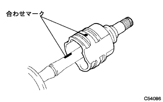
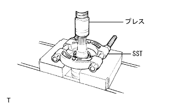

フロントドライブシャフト（4WD） 分解 |
| 1. フロントアクスル インボードジョイント ブーツ クランプ LH NO.2取りはずし |
引っ掛けクランプの場合
 |
ニードルノーズプライヤーを使用して、引っかけ部をはずし、フロントアクスルインボードジョイントブーツクランプLH No.2を取りはずす。
ワンタッチクランプの場合
 |
マイナス薄刃ドライバーを使用して、フロントアクスルインボードジョイントブーツクランプLH No.2のかしめを解き、フロントアクスルインボードジョイントブーツクランプLH No.2をインボードジョイントブーツから取りはずす。
| 2. フロントアクスル インボードジョイント ブーツ クランプ RH NO.2取りはずし |
| 3. フロントアクスル インボードジョイント ブーツ クランプ LH取りはずし |
引っ掛けクランプの場合
ニードルノーズプライヤーを使用して、引っかけ部をはずし、フロントアクスルインボードジョイントブーツクランプLHを取りはずす。
ワンタッチクランプの場合
マイナス薄刃ドライバーを使用して、フロントアクスルインボードジョイントブーツクランプLHのかしめを解き、フロントアクスルインボードジョイントブーツクランプLHをインボードジョイントブーツから取りはずす。
| 4. フロントアクスル インボードジョイント ブーツ クランプ RH取りはずし |
| 5. フロントアクスルインボードジヨイントブーツ切り離し |
インボードジョイントブーツをフロントドライブインボードジョイントASSY LHから切り離す。
| 6. フロントドライブ インボードジョイントASSY LH取りはずし |
インボードジョイント部からグリースを取り除く。
|  |
フロントドライブインボードジョイントASSY LHおよびフロントドライブアウトボードジョイントシャフトASSY LHに合わせマークを付ける。
フロントドライブ インボードジョイントASSY LHをフロントドライブ アウトボードジョイントシャフトASSY LHから取りはずす。
アルミ板を介して、フロントドライブ アウトボードジョイントシャフトASSY LHをバイスで固定する。
 |
SSTを使用して、フロントドライブ インナシャフトスナップリングINN LHを取りはずす。
 |
図の箇所に合わせマークを付け、ブラスバーおよびハンマーを使用して、トリポートジョイントASSYを取りはずす。
フロントアクスルインボードジョイントブーツおよびインボードジョイントブーツクランプLHを取りはずす。
| 7. フロントドライブ インボードジョイントASSY RH取りはずし |
| 8. フロントドライブ シャフト ダンパ RH取りはずし |
ワンタッチクランプの場合
マイナス薄刃ドライバーを使用して、ドライブシャフトダンパクランプのかしめを解き、ドライブシャフトダンパクランプをフロントドライブシャフトダンパRHから取りはずす。
引っかけクランプの場合
ニードルノーズプライヤーを使用して、引っかけ部をはずし、フロントドライブシャフトダンパRHをフロントドライブアウトボードジョイントシャフトASSY RHから取りはずす。
| 9. フロントアクスル アウトボードジョイント ブーツ クランプ LH NO.2取りはずし |
 |
マイナス薄刃ドライバーを使用して、フロントアクスルアウトボードジョイントブーツクランプLH No.2のかしめを解き、フロントアクスルアウトボードジョイントブーツクランプLH No.2をアウトボードジョイントブーツから取りはずす。
| 10. フロントアクスル アウトボードジョイント ブーツ クランプ RH NO.2取りはずし |
| 11. フロントアクスル アウトボードジョイント ブーツ クランプ LH取りはずし |
マイナス薄刃ドライバーを使用して、フロントアクスルアウトボードジョイントブーツクランプLHのかしめを解き、フロントアクスルアウトボードジョイントブーツクランプLHをアウトボードジョイントブーツから取りはずす。
| 12. フロントアクスル アウトボードジョイント ブーツ クランプ RH取りはずし |
| 13. ドライブシヤフトアウトボードジヨイントブーツ取りはずし |
ドライブシャフトアウトボードジョイントブーツをフロントドライブアウトボードジョイントシャフトASSY LHから取りはずす。
アウトボードジョイント部からグリースを取り除く。
| 14. フロントドライブ シャフト ホールスナップリング LH取りはずし |
 |
マイナスドライバーを使用して、フロントドライブシャフトホールスナップリングLHを取りはずす。
| 15. フロントドライブシャフトダスト カバー LH取りはずし |
|  |
SSTおよびプレスを使用して、フロントドライブシャフトダストカバーLHを取りはずす。
| 16. フロントドライブ シャフト ホールスナップリング RH取りはずし |
SSTを使用して、スナップリングを取りはずす。
| 17. フロントドライブ シャフト ベアリング取りはずし |
SSTおよびプレスを使用して、ベアリングをインボードジョイントASSY RHから取りはずす。
ドライブシャフト ベアリング ブラケット ホールスナップリングを取りはずす。